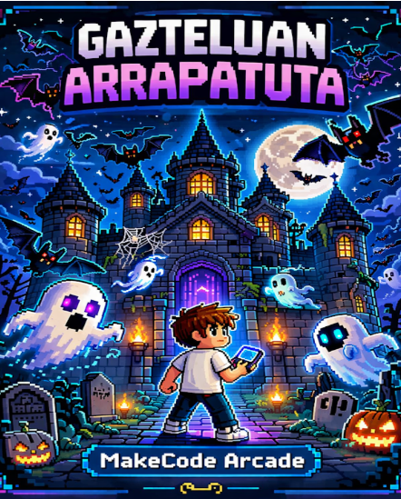

| Nire jolas honetan, nola irabazteko oso errexa da, pertsonai nagusia nik egindako mapa batean hasten da, gero bost izar eta etsaiak hil egin behar ditu puntu guztiak lortzeko. Hori dena egindakoan lehenengo maparen behean bolita gorri batzuk daude, beste mapara pasatzeko. Beste mapan zaudenean berdina egin behar duzu eta 16 puntu lortu behar dituzu makinitako pantailan win azaltzeko. |